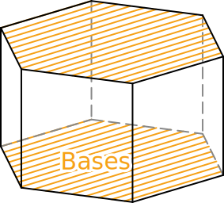
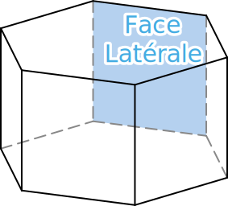

Ci-dessus est représenté en perspective un bâtiment.
Combien ce solide a-t-il de face ? de sommet ?
Quel est la particularité des faces ABCDE et FGHIJ ? Ces faces sont appelées base du prisme.
Quel sont les points communs des faces latérales ?
En prenant pour dimension :
AE = 1,1cm
ED = 1,6cm
AF = 4cm
Reproduire le patron de ce prisme en vrai grandeur, ajouter des languettes de collage, le découper et l'assembler.
Vocabulaire :
Solide :
Un solide est une figure géométrique en trois dimensions. On utilise une perspective pour le représenter dans le plan.
Un solide est composé de trois éléments :
Des sommets (des points dans l'espace)
Des arêtes (les segments qui relie deux sommets)
Des faces (les polygones formés par les arêtes)
Remarque :
Tous les points ne sont pas des sommets et certain solide n'en ont pas (et donc aucune arêtes). Par exemple la sphère.
Perspective cavalière :
La perspective cavalière est une représentation de solide dans le plan respectant les règles suivantes :
La face avant est représentées en vrai grandeur.
Les arêtes parallèles sont représentées par des segments parallèles et de même longueur.
Les arêtes cachées sont représentées en pointillé.
Exemples :
Prismes :
Définition :
Un prisme droit est un solide composé de deux bases polygonales identique et parallèles relié entre elles par des faces latérales rectangulaires de même longueur.


Remarque
Un pavé droit est un prisme particulier dont les bases sont des rectangles.
Patron :
Un patron est un dessin du plan permettant de construire un solide par découpage et pliage.
Exemple :
Remarque :
Il est possible de créer plusieurs patrons différents pour un même solide.
Cylindre :
Définition :
Un cylindre de révolution est composé de 2 disques formants les bases, parallèles entre eux.
La surface latérale lorsqu'elle est dépliée est un rectangle ayant la même largeur que le périmètre des disques.
Exemple :
Patron :
Le patron d'un cylindre est composée de deux disques identiques de part et d'autre d'un rectangle ayant pour longueur le périmètre des disques.
Exemple :
Volumes :
Rappels :
Le volume s'exprime en mètre cube ($m^3$) ou en Litre (L)
$1\ L=1\ dm^3$
$1\ m^3=1\ 000\ dm^3 = 1\ 000\ 000\ cm^3$
Pavé droit :
Formule :
$V = Longueur \times Largeur \times Hauteur$
Un pavé droit de dimension 5cm par 3cm par 7cm a pour volume : $V = 5\times3\times7=105\thinspace cm^3$
Cube :
Formule :
$V = côté \thinspace^3$
Un cube de côté 4cm a pour volume : $V = 4^3 = 64\thinspace cm^3$
Prisme :
Formule :
$V = Aire_{Base} \times hauteur $
Un prisme dont la base a une aire de 12cm² et de hauteur 6cm a pour volume : $V = 12 \times 6 = 82\thinspace cm^3$
Cylindre :
Formule :
$V = \pi \times rayon^2 \times hauteur $
Un cylindre de rayon 3cm et de hauteur 6cm a pour volume : $V = \pi \times 3^2 \times 6 \approx 169,4\thinspace cm^3$